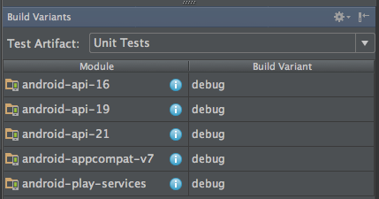

Getting Started
Robolectric works best with Gradle or Maven. If you are starting a new project, we would reccomend Gradle first (since it is the build system of choice in Android Studio) and Maven second. Regardless, Robolectric should integrate well into whatever build tool you are using.
Building with Gradle
Add the following to your build.gradle:
testCompile "org.robolectric:robolectric:3.1.2"
Annotate your test with the Gradle test runner:
@RunWith(RobolectricGradleTestRunner.class)
@Config(constants = BuildConfig.class)
public class SandwichTest {
}
Note that you must specify the constants field which points to the BuildConfig.class generated by the build system. Robolectric uses the constants in the class to compute the output paths used by Gradle when building your project. Without these values, Robolectric will not be able to find your merged manifest, resources, or assets.
Building with Maven
Add the following to your pom.xml:
<dependency> <groupId>org.robolectric</groupId> <artifactId>robolectric</artifactId> <version>3.1.2</version> <scope>test</scope> </dependency>
Annotate your test with the base test runner:
@RunWith(RobolectricTestRunner.class)
public class SandwichTest {
}
If you reference resources that are outside of your project (i.e. in a aar dependency), you will need to provide Robolectric with a pointer to the exploded aar in your build system. See the section titled "Using Library Resources" for more information.
Building with Android Studio
Robolectric works with Android Studio 1.1.0 or newer. Simply follow the instructions above for working with Gradle. For versions of Android Studio older than 2.0.0, enable the unit test support in the "Build Variants" tab and run your test. As of Android Studio 2.0.0, the test artifacts feature is enabled by default, and the setting to enable/disable test artifacts can be found in File Menu -> Settings -> Build, Execution, Deployment -> Build Tools -> Gradle -> Experimental.

Note for Linux and Mac Users
If you are on Linux or on a Mac, you will probably need to configure the default JUnit test runner configuration in order to work around a bug where Android Studio does not set the working directory to the module being tested. This can be accomplished by editing the run configurations, Defaults -> JUnit and changing the working directory value to $MODULE_DIR$.
Building with Eclipse
Install the m2e-android plugin for Eclipse, and import the project as a Maven project. After importing into Eclipse, you have to mark the consume-aar goal as ignored, since AAR consumption is not yet supported by m2e-android. To do this, simply apply the Quick fix on the "Plugin execution not covered by lifecycle configuration" error. To run your tests, just right click on the project -> Run as -> JUnit Test, then choose the Eclipse JUnit Launcher.
Sample Projects
Look at the Robolectric samples to see how fast and easy it can be to test drive the development of Android applications. In addition, check out the Gradle or Maven starter projects.